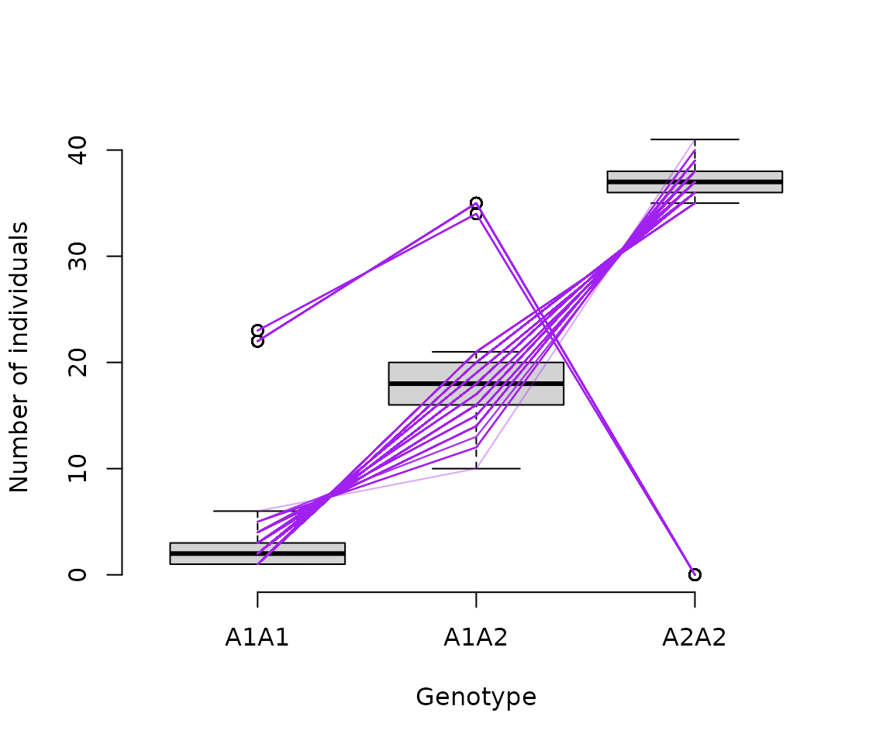
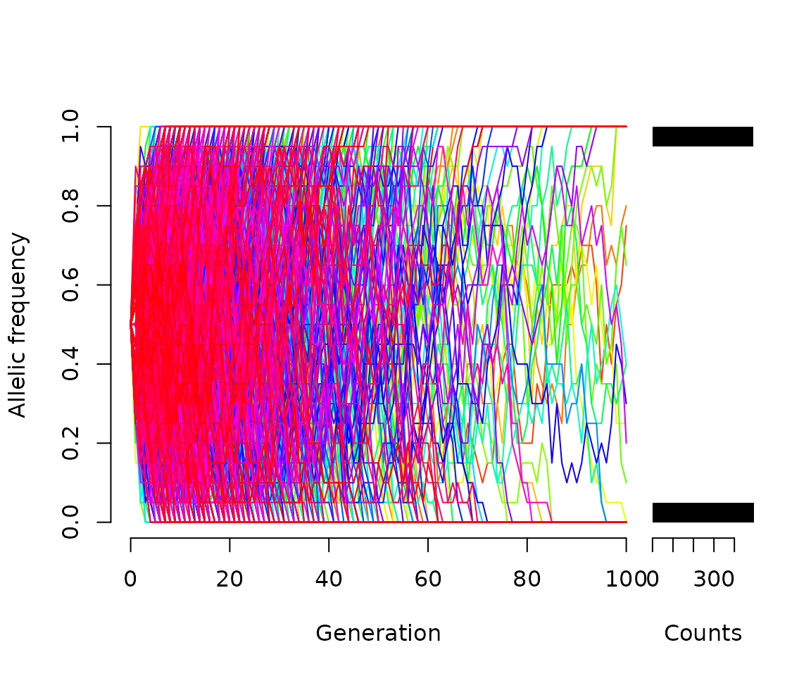
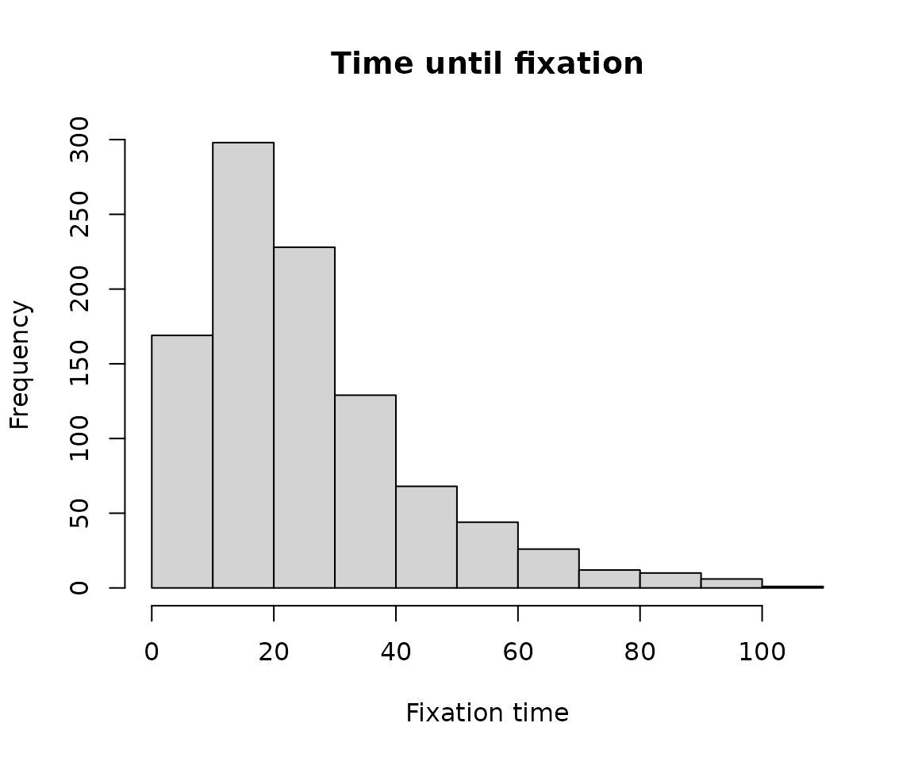
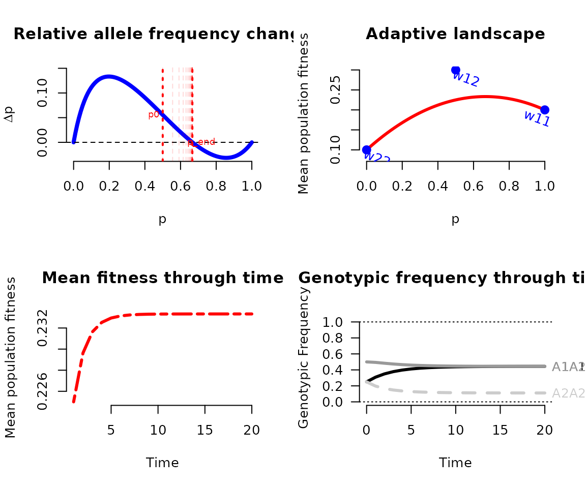

Tools for population genetics
Matheus Januario and Jennifer Auler
Oct/2023
Source:vignettes/population_genetics.Rmd
population_genetics.RmdHardy-Weinberg equilibrium
The Hardy-Weinberg equilibrium (HWE) is a deterministic model for the maintenance of allele-level biodiversity. However, stochastic thinking is already well-established as an important aspect of studying evolutionary biology - and so there are clear advantages in introducing this kind of thinking to students.
However, typical HWE equations or study material related to it do not
address stochastic variation coming from finite numbers of individuals.
The function OneGenHWSim() addresses this issue. With it,
students can graph and explore stochasticity under HWE:
nsims = 1000
sims <- OneGenHWSim(n.ind = 57, p = .2, n.sim = nsims)
boxplot(sims, frame.plot=F,
ylab="Number of individuals", xlab="Genotype")
for(i in 1:nrow(sims)){
lines(x=1:3, y=sims[i, ], col="#A020F064")
}
Of course, the object generated by the simulations can also be manipulated as if it was “data”
head(sims)## A1A1 A1A2 A2A2
## sim_1 2 18 37
## sim_2 5 12 40
## sim_3 1 20 36
## sim_4 2 18 37
## sim_5 4 14 39
## sim_6 3 16 38With this type of object, students can also simulate closed populations of a specific size, thus for instance testing (using e.g. chi-square tests) actual hypotheses about HWE adequacy to explain a certain genotypic frequency.
Genetic drift
Students can also simulate genetic drift in Wright-Fisher
populations, by using the function WFDriftSim()
drifting = WFDriftSim(Ne = 10, n.gen = 100, p0 = .5, n.sim = 1000,
print.data = T, plot.type = "static", knitr = TRUE)
#View the first 10 generation of a few simulations.
drifting[1:6, 1:11]## gen0 gen1 gen2 gen3 gen4 gen5 gen6 gen7 gen8 gen9 gen10
## sim1 0.5 0.60 0.65 0.75 0.6 0.70 0.70 0.80 0.90 0.90 0.80
## sim2 0.5 0.25 0.25 0.35 0.6 0.70 0.80 0.80 0.85 0.75 0.85
## sim3 0.5 0.40 0.30 0.35 0.4 0.35 0.35 0.35 0.25 0.30 0.40
## sim4 0.5 0.65 0.65 0.50 0.5 0.55 0.40 0.50 0.45 0.30 0.25
## sim5 0.5 0.40 0.50 0.50 0.4 0.55 0.40 0.45 0.55 0.30 0.30
## sim6 0.5 0.40 0.35 0.20 0.2 0.10 0.10 0.05 0.00 0.00 0.00The argument printData = T creates an object that can
also be handled as it was “data”, so students can use it to calculate
drift processes, for instance, the amount of time needed until
fixation:
fixchecker <- function(x){
res = suppressWarnings(
min(which(x %in% 0:1), na.rm = T)
)
return(res)
}
hist(x = apply(X = drifting, MARGIN = 1, fixchecker),
main="Time until fixation", xlab = "Fixation time")
Or other types of manipulations or measurements.
Natural selection
Just like the previously mentioned functions,
NatSelSim() can generate objects that can be handled by
students as if they were “data”.
selected = NatSelSim(w11 = .2, w12 = .3, w22 = .1,
n.gen = 20, print.data = T, plot.type = "static", knitr= TRUE)
Note that by default the function provides 4 animated plots, but this
can be changed using the argument plot_type (see function
help for details).
Now, we can ask: Assuming we simulated the dynamics for enough time, which genotype in the simulation above reached its equilibrium frequency faster?
# a numeric tolerance to accept some frequency as close enough to equilibrium
tol = 0.0001
aux = abs(apply(selected, 2, diff))
# answer (in number of generations)
apply(aux>tol, 2, which.min)## AA Aa aa
## 20 18 18In the above result, we are tabulating the number of dominant homozygotes (“AA”), hetrozygotes (“Aa”), and recessive homozygotes (“aa”). Students can manipulate the objects freely, and thus educators can allow them to use simulations to explore relevant scenarios in an investigative manner (see types of inquiries in Banchi & Bell, 2008)